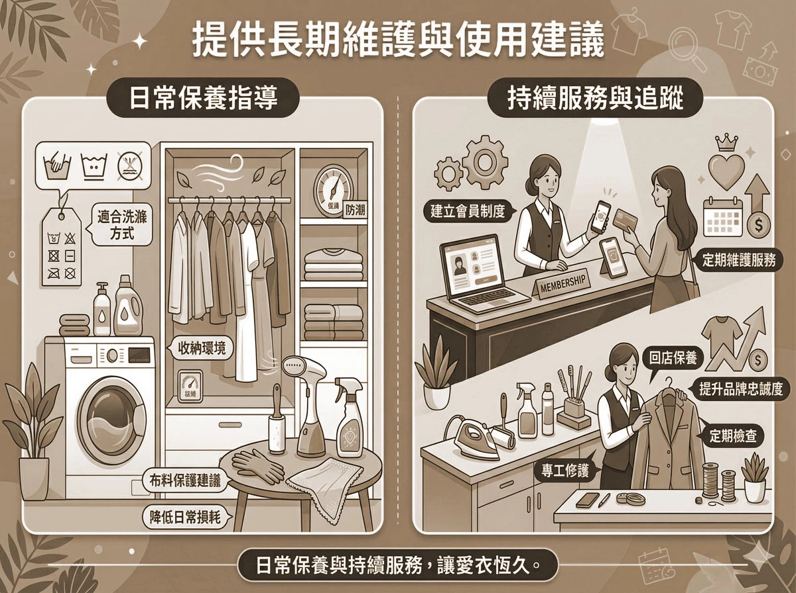
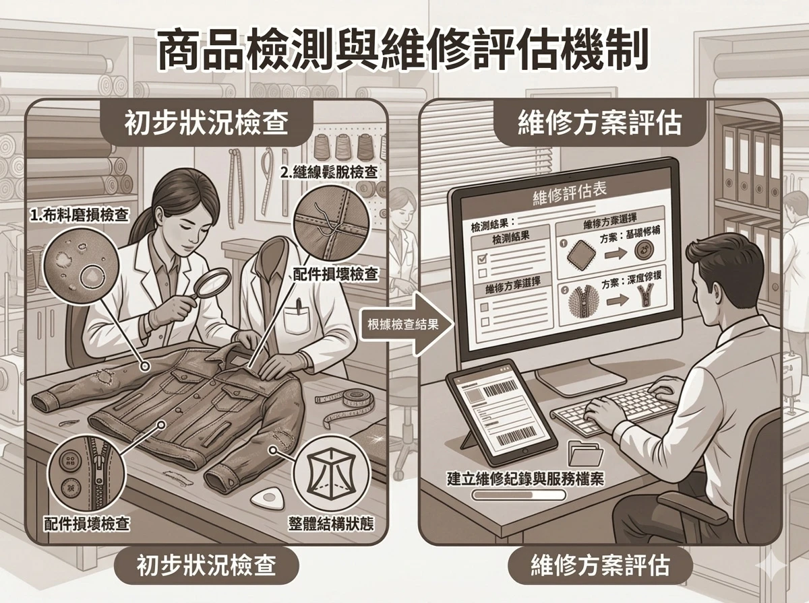
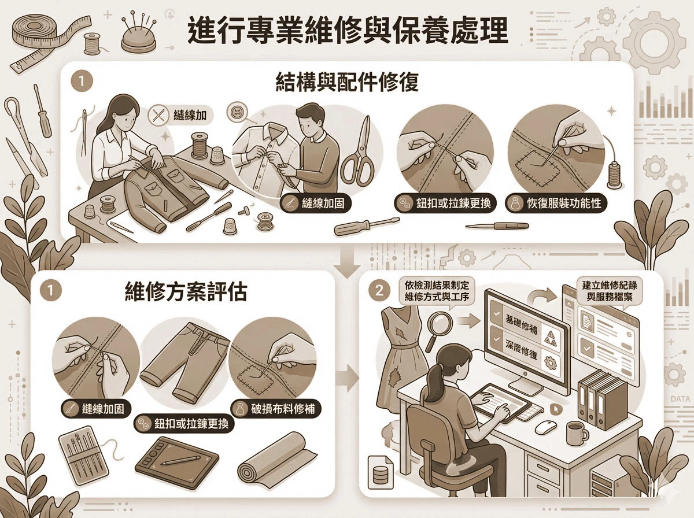

receipt提供長期維護與使用建議
fiber_smart_record日常保養指導：
提供適合的洗滌方式、收納環境與布料保護建議，降低日常使用造成的損耗。
fiber_smart_record持續服務與追蹤：
建立會員或回店保養制度，定期提供檢查與維護服務，延長服裝使用壽命並提升品牌忠誠度。

build檢測與維修評估商品機制
fiber_smart_record初步狀況檢查：
由專業人員檢視服裝布料磨損、縫線鬆脫、配件損壞及整體結構狀態，確認商品目前使用情況。
fiber_smart_record維修方案評估：
依檢測結果制定維修方式與工序，例如基礎修補或深度修復，並建立維修紀錄與服務檔案。

pan_tool進行專業維修與保養處理
fiber_smart_record結構與配件修復：
針對縫線加固、鈕扣或拉鍊更換、破損布料修補等進行技術處理，恢復服飾功能性。
fiber_smart_record整體保養與整理：
進行專業清潔、布料整燙與版型微調，使服飾外觀與穿著舒適度維持最佳狀態。